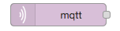

NodeRed opdrachten¶
Lees eerst de inleiding voor NodeRed.
1. Eerste flow¶
Met deze eerste flow kun je zien of alles werkt:

NodeRed: eerste flow¶
Hiervoor gebruik je de volgende nodes:
figuur |
naam |
soort node |
|
inject-node |
input |
|
debug-node |
output |


Opdracht 1.1
Voer de onderstaande opdrachten uit in een lege (flow)tab in NodeRed.
sleep een inject-node vanuit de lijst met nodes links naar het lege vlak in het midden
plaats op dezelfde manier een debug-node;
verbind de output (rechts) van de inject-node met de input (links) van de debug-node;
activeer deze flow (rechts boven: Deploy);
selecteer de debug-tab (rechts);
test deze flow, door op het knopje links op de input-node (“timestamp”) te klikken.
Als het goed is, krijg je in het debug-venster rechts nu de output van deze flow te zien. Elke keer als je op de input-node klikt, genereert deze een timestamp-event.
Opdracht 1.2
Voor onderstaande opdrachten uit; test de uitwerking (na “Deploy”) via de debug-tab.
- verander de configuratie van de inject-knoop: zorg ervoor dat deze elke 10 seconden een timestamp oplevert.
double-click op een knoop geeft het configuratie-venster;
bewaar de nieuwe configuratie via de “Done”-knop.
verander de configuratie van de inject-knoop: zorg ervoor dat deze een tekst levert als inhoud van het bericht (payload).
verbind meerdere inject-knopen met herhalende berichten met dezelfde debug-knoop.
Tips:
je kunt in het debug-venster aangeven dat je alleen de “current flow” wilt zien;
je kunt het debug-venster leeg maken via het vuilnisbakje (rechts boven).
2. Verbinden met een IoT-knoop via MQTT¶
Voor de communicatie tussen NodeRed en de IoT-knopen gebruiken we (meestal) het MQTT protocol. In een later hoofdstuk werken we dat verder uit. Het gebruik van MQTT-nodes in NodeRed is erg eenvoudig; het lastigste is het configureren hiervan.
figuur |
naam |
soort node |
 |
mqtt-input-node |
input |
|
mqtt-output-node |
output |
|
mqtt-broker-node |
configuratie |


In de volgende opdrachten maak je de onderstaande flow om het gebruik van mqtt te testen.

MQTT input- en output-test¶
2.1 MQTT input¶
Als eerste proberen we de sensor-gegevens van een IoT-knoop te ontvangen in NodeRed. De waarden van deze sensoren geven we eerst weer in het debug-venster; later kunnen we deze gebruiken in een besturing of een dashboard.
Sleep een mqtt-input-node naar het flow-venster;
Configureer deze (door double-click):
Bij Server vul je de gegevens van de broker in. Zie de schermafbeeldingen verderop. Selecteer een eerder ingevulde broker of maak (via het potlood) een nieuwe broker aan. Voorbeeld: onder tab Connection: Server: infvopedia.nl Port: 1883 Onder de tab Security vul je de username/password-combinatie in.
Bij Topic vul je het sensor-topic van je IoT-knoop in, bijvoorbeeld: node/xxxx/sensors, met in plaats van xxxx de identificatie van je eigen knoop.
Bewaar de configuratie (Save).
Sleep een debug-node naar het flow-venster en verbind de output van de mqtt-node met de input van de debug-node.
Activeer de flow (“Deploy”)
Als het goed is zie je in het debug-venster nu de berichten van je IoT-knoop verschijnen. Je moet misschien even wachten; je kunt ook één de knoppen op de IoT-knoop proberen.

MQTT broker configuration (1)¶

MQTT broker configuration (2)¶

MQTT broker configuration (3)¶
2.2 MQTT output¶
MQTT input- en output-test¶
Op eenzelfde manier kunnen we via een inject-node berichten sturen naar een IoT-knoop.
Sleep een mqtt-output-node naar het flow-venster;
Configureer deze (door double-click):
Selecteer bij Server de broker die je hierboven geconfigureerd hebt.
Vul bij Topic in: node/xxxx/actuators, met in plaats van xxxx de identificatie van je eigen knoop.
Bewaar de configuratie.
Sleep een template-node (met “{” als symbool) naar het flow-venster en verbind de output van de template-node met de input van de mqtt-node. Configureer deze template-node: Name:
led0-on, Format:Plain text, en template:{"0":{"dOut":1}}. (Zie de figuur verderop.)Sleep een inject-node naar het flow-venster en verbind deze met de template-node led0-on.
Sleep een template-node naar het flow-venster en verbind de output van de template-node met de input van de mqtt-node. Configureer deze template-node: Name:
led0-off, Format:Plain text, en template:{"0":{"dOut":0}}.Sleep een inject-node naar het flow-venster en verbind deze met de template-node
led0-off.Activeer de flow (“Deploy”).
Met de beide inject-nodes kun je (als alles goed gaat) nu de (linker) led van de IoT-knoop in- en uitschakelen.
Opmerking: als je de flow activeert, zie je bij de mqtt-nodes een gekleurd bolletje dat de toestand van de verbinding aangeeft. Als de mqtt-knoop verbinding heeft met de mqtt-broker (server) is dit bolletje groen.

Template node configuration (“led0-on”)¶
3. Automatiseren¶
Via NodeRed kun je allerlei protocollen en toepassingen koppelen. Je kunt ook allerlei zaken automatiseren, bijvoorbeeld een lamp inschakelen als je thuiskomt.
Een eenvoudige automatisering is het laten knipperen van LED-0 op de IoT-knoop.
Maak een NodeRed-flow waarmee je LED-0 van een (gesimuleerde) IoT-knoop laat knipperen. Begin met de eenvoudige flow van Opdracht 1, en breid deze later uit met een MQTT-output-node. Vergeet niet aan het eind van elke opdracht de flow te activeren (“Deploy”); controleer bij elke stap of het werkt.
Opdracht 3.1 - knipperende led(1)
In de eerste stap maak je een flow die elke seconde een bericht genereert, afwisselend “aan” en “uit”. Hiervoor gebruik je dezelfde flow die je in de vorige opdracht (2.2) gemaakt hebt. Je programmeert alleen de inject-nodes anders.
Configureer de bovenste inject-node (voor “led0-on”): deze moet elke 2 seconden een bericht sturen (“repeat: interval, every 2 seconds”), waarmee de led ingeschakeld wordt. Zie de figuur verderop.
Configureer de onderste inject-node (voor “led0-off”): deze moet na een vertraging van 1 seconde (“inject once after 1 sec”), elke 2 seconden een bericht sturen (“repeat: interval, every 2 seconds”).
Activeer de flow (“Deploy”).
Als het goed is knippert de led nu 1 seconde aan, 1 seconde uit.

Inject node configuration: elke 2 seconden een bericht¶
Opdracht 3.2 - knipperende led(2)
Uiteindelijk willen we een led laten knipperen op basis van een enkel binnenkomend bericht van een enkele node. We beginnen daarom met één enkele niet-repeterende inject-node. We gebruiken daarvoor een tweetal delay-nodes die we in een lus doorverbinden. Zo’n delay node stuurt een binnengekomen bericht na een bepaalde vertraging door.
We beginnen met de flow als in de vorige opdracht. Zorg ervoor dat de eerste inject-node niet herhaalt. Verwijder de tweede inject-node.
Sleep een delay-node naar het flow-gedeelte, en configureer deze voor een vertraging van 1 sec. Verbind de output van de bovenste inject-node met de input van deze delay-node. Verbind deze input ook met de template-node led0-on.
Sleep een delay-node naar het flow-gedeelte, en configureer deze voor een vertraging van 1 sec. Verbind de output van de eerste delay-node met de input van de tweede delay-node. Verbind deze input ook met de template-node led0-off. Verbind de output van de tweede delay-node met de input van de eerste delay-node.
Activeer de schakeling
Als het goed is, begint de LED te knipperen als je de inject-node aanklikt. (Ga na hoe deze schakeling werkt.)
Opmerking: de techniek van het maken van een “oscillator” door meerdere vertragende componenten in een lus te verbinden gebruik je ook in de elektronica (“ring oscillator”).

Knipperende led met delays(1)¶
Opdracht 3.3 - knipperende led(3)
De bovenstaande schakeling heeft één nadeel: deze blijft doorgaan. We willen het aantal keren dat de led knippert beperken, bijvoorbeeld tot maximaal 5 keer. Hiervoor gebruiken we een functie die steeds 5 berichten doorlaat en dan 1 niet. Deze functie-node plaatsen we voor de eerste delay, zie de onderstaande flow:

Knipperende led met delays(1)¶
maak bovenstaande flow.
configureer de function-node “limit-5-messages” op de volgende manier:
1 2 3 4 5 6 7 8 9 | var count = context.get('count')||0;
count = count + 1;
context.set('count', count);
if (count > 5) {
context.set('count', 0);
return null;
} else {
return msg;
}
|
Een korte uitleg bij deze functie (voor als je het naadje van de kous wilt weten):
we gebruiken een context variabele
count; deze houdt het aantal aanroepen c.q. ontvangen berichten bij.een verdere uitleg van context variabelen in NodeRed vind je op: https://nodered.org/docs/user-guide/context en https://nodered.org/docs/user-guide/writing-functions
als dit aantal groter is dan 5, zet dan de teller weer op 0, en geef
nullals resultaat. In NodeRed betekent dit: stuur geen bericht naar de volgende nodes.in het andere geval: geef
msgals resultaat, m.a.w., geef het ontvangen bericht door aan de volgende nodes.
Vraag: wat gebeurt er als we deze functie voor de tweede delay plaatsen?
je kunt in het debug-venster aangeven dat je alleen de “current flow” wilt zien;
je kunt het debug-venster leeg maken via het vuilnisbakje (rechts boven).
Opdracht 3.2
De volgende stap is om elke deze waarden te koppelen aan de led van de IoT-knoop. Eerst maken we de waarden geschikt voor de LED. Vervolgens koppelen we deze aan de IoT-knoop, via MQTT.
Configureer de bovenste inject-node:
Stel de payload in als JSON, met als waarde:
{"0": {"dOut": 1}}. Tip: bij het invoeren van een JSON-waarde kun je de JSON-editor gebruiken, via de...rechts in het edit-venster. Je maakt dan minder fouten.Bewaar de configuratie (“Save”)
“Deploy”, en controleer de output in het debug-venster.
Configureer de onderste inject-node:
Stel de payload in als JSON, met als waarde:
{"0": {"dOut": 0}}.Bewaar de configuratie (“Save”)
“Deploy”, en controleer de output in het debug-venster.
Voeg een MQTT output-node toe, en configureer deze:
stel de MQTT broker (“server”) in als in bij het dashboard.
gebruik als Topic:
node/xxxx/actuators, waarbij je voorxxxxde ID van je IoT-knoop invult.Bewaar de configuratie (“Save”)
“Deploy”, en controleer de output in het debug-venster.
Als het goed is zie je nu de berichten niet alleen in het debug-venster verschijnen, maar knippert de LED van je IoT-knoop ook op dezelfde manier mee.
De codes voor het in- en uitschakelen van de LED behandelen we later uitgebreider. De eerste “0”` staat hier voor LED-0. Sommige IoT-knopen hebben ook een LED-1: probeer die op dezelfde manier te laten knipperen.
Deze manier van werken is typisch voor NodeRed: je bouwt een flow beetje voor beetje op, waarbij je in het begin veel gebruik maakt van inject- en debug-nodes. Je test hiermee elke stap. Deze nodes kun je laten zitten tijdens het gebruik: een debug-node kun je eenvoudig uitschakelen als je deze even niet nodig hebt.
Nog enkele suggesties:
je kunt meerdere MQTT-output-nodes toevoegen met dezelfde input, voor verschillende IoT-knopen: je kunt die LEDs tegelijk laten knipperen.
4. Koppelen van IoT-apparaten¶
In deze opdracht koppel je de knoppen van de ene IoT-knoop aan de LED van een andere IoT-knoop. Je kunt deze LED dan op afstand aan- en uitzetten.
We moeten hiervoor de berichten die deze knoppen sturen splitsen in drie stromen: voor het indrukken van de eerste button, voor het indrukken van de tweede button, en voor het indrukken van beide buttons.

Function node Convert-LPP-buttons¶
Je kunt deze function-node op twee manieren aanmaken:
Methode 1. Sleep een function-node naar het flow-gedeelte, en configureer deze als volgt:
Name::
Convert-LPP-buttonsFunction: kopieer en plak onderstaande code
Outputs: 3 (berichten voor het indrukken button 0 gaan naar output 0; voor button 1 naar output 1; als beide buttons ingedrukt zijn: output 2)
1 2 3 4 5 6 7 8 9 10 11 12 13 14 15 16 | if (msg.payload.payload.hasOwnProperty("2")) {
msg.payload.button0 = msg.payload.payload[2].dIn;
}
if (msg.payload.payload.hasOwnProperty("3")) {
msg.payload.button1 = msg.payload.payload[3].dIn;
}
if (msg.payload.button0 && msg.payload.button1){
return [null, null, msg];
} else if (msg.payload.button0) {
return [msg, null, null];
} else if (msg.payload.button1) {
return [null, msg, null];
} else {
return [null, null, null];
}
|
Methode 2.
Selecteer en kopieer de flow-tekst in JSON-notatie hieronder naar het Clipboard (CMD-C, CTRL-C afhankelijk van je O.S.)
Importeer deze in de flow:
Selecteer hamburgermenu -> Import -> Clipboard
“Paste” het clipboard in het venster (CMD-V, CTRL-V)
Klik “Import”
De function-node verschijnt nu in het flow-gedeelte.
JSON-tekst voor de flow:
[{"id":"c131fbb8.330988","type":"function","z":"8d3e9168.dadf98","name":"convert-LPP-buttons","func":"if (msg.payload.payload.hasOwnProperty(\"2\")) {\n msg.payload.button0 = msg.payload.payload[2].dIn;\n}\nif (msg.payload.payload.hasOwnProperty(\"3\")) {\n msg.payload.button1 = msg.payload.payload[3].dIn;\n}\n\nif (msg.payload.button0 && msg.payload.button1){\n return [null, null, msg];\n} else if (msg.payload.button0) {\n return [msg, null, null];\n} else if (msg.payload.button1) {\n return [null, msg, null];\n} else {\n return [null, null, null];\n}","outputs":3,"noerr":0,"x":580,"y":100,"wires":[["eff69e91.a729b8"],["ddca2d4b.b32878"],[]]}]
Opdracht 4.1 Besturen van je eigen IoT-knoop¶
Maak de function-node zoals hierboven beschreven
Maak met deze function node de onderstaande flow. Zorg ervoor dat de MQTT-nodes voor je eigen button geconfigureerd zijn.
Activeer deze flow (Deploy).

Nu kun je met de buttons op je IoT-knoop de LED aan- en uitzetten.
Merk op dat in deze flow een JSON-node gebruikt wordt. Hiermee zet je de string-notatie zoals als MQTT-bericht binnenkomt om in een JavaScript-object dat je gemakkelijk in functies e.d. kunt gebruiken.
Hint Vergelijk met behulp van de debug-node het formaat van de MQTT-berichten zoals deze binnenkomen en nadat deze via de JSON-node omgezet zijn.
Opdracht 4.2 Besturen van een andere IoT-knoop¶
Pas het Topic van de mqtt-output-node aan voor de knoop die je wilt besturen.
Activeer de flow.
Nu besturen de buttons van je IoT-knoop de LED van een andere knoop.
Variaties:
je kunt op deze manier ook meerdere IoT-knopen besturen: met de output van een template-node kun je meerdere mqtt-output-nodes aansturen.
Vraag: we gebruiken twee verschillende buttons: één voor het aanzetten, en één voor het uitzetten van de LED. Waarom doen we dit?